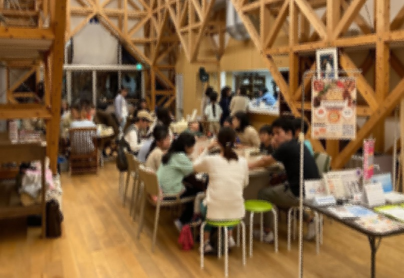

学ぶ
学校の宿題や自主学習を，学生が一人ひとりに合わせてサポート．

学習支援×子ども食堂
学んだあとに，みんなで食べる．
月に一度，まちの中にひらく居場所です．
01 / ABOUT
学校の宿題や自主学習を，学生が一人ひとりに合わせてサポート．
勉強が終わったら，温かいカレーを囲んでほっとひと息．
学校や世代を越えた出会い．まちの中の新しい居場所．
02 / INFORMATION
EVERY MONTH
第4火曜日
開催日時は変更になる場合があります．
03 / COLLABORATION
愛知県立大学
愛知県立大学
愛知淑徳大学
協力
協力
協力
主催：NPO法人まちのテラス